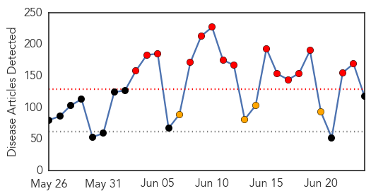

30 Day Trends
Web: 15 alerts, 4 warnings
Twitter: 7 alerts, 11 warnings
Top Articles:
- 0.999
- MERS outbreak at a crossroads, says Seoul health official
- 0.999
- South Korean hospitals suspend services as MERS outbreak spreads
- 0.999
- (LEAD) S. Korea reports 4 new MERS cases with no additional deaths
- 0.998
- With more MERS cases, South Korea says outbreak at crossroads
- 0.998
- With more MERS cases, S.Korea says outbreak at crossroads
- 0.998
- With more MERS cases, South Korea says outbreak at a crossroads
- 0.996
- Two more MER deaths reported in South Korea
- 0.994
- MERS virus death toll rises to '471 since 2012': WHO
- 0.994
- The World On Arirang
- 0.992
- South Korea reported 4 more new MERS cases
- 0.992
- No new probable MERS cases found in Thailand
- 0.991
- 2 USFK families released from MERS quarantine
- 0.991
- MERS cases increase again; infection outside of hospitals reported
- 0.988
- S Korea reports 4 new Mers cases, bringing total to 179, Others news, Health News, AsiaOne YourHealth
- 0.988
- MERS update: Korea, Saudi Arabia
- 0.985
- South Korea reports four new cases of Mers virus
- 0.985
- Health authorities says disease outbreak is at crossroads
- 0.985
- Four new MERS cases reported, 179 in total in S. Korea
- 0.981
- Gov’t Relies on Thermal Scans to Prevent Spread of MERS
- 0.975
- What to Know About the Cyclospora Parasite Outbreak
- 0.974
- Park vows to improve disease countermeasures
- 0.974
- Omani businessman only 'mildly affected' by MERS
- 0.969
- With more MERS cases, South Korea says outbreak at crossroads
- 0.968
- Pregnant MERS patient recovers, safely gives birth, Others news, Health News, AsiaOne YourHealth
- 0.964
- FPO says Mers situation in Thailand is under control
- 0.959
- Thailand still faces risk of MERS
- 0.953
- South Korea Reports Four New MERS Cases, Total Rises to 179
- 0.946
- Test declares child in Jakarta not infected by MERS
- 0.941
- Extremely Deadly Virus Has Come From The Muslim World Unleashing A Biblical Plague
- 0.925
- Simple steps could have prevented heatwave deaths: doctors
- 0.917
- Chicago Tribune
- 0.917
- Chicago Tribune
- 0.917
- Chicago Tribune
- 0.917
- Chicago Tribune
- 0.917
- Chicago Tribune
- 0.917
- Chicago Tribune
- 0.917
- Chicago Tribune
- 0.917
- Chicago Tribune
- 0.917
- Chicago Tribune
- 0.917
- Chicago Tribune
- 0.917
- Chicago Tribune
- 0.917
- Chicago Tribune
- 0.917
- Chicago Tribune
- 0.917
- Chicago Tribune
- 0.917
- Chicago Tribune
- 0.917
- Chicago Tribune
- 0.917
- Chicago Tribune
- 0.917
- Chicago Tribune
- 0.917
- Chicago Tribune
- 0.917
- Chicago Tribune
Showing top 50 articles...
Top Tweets:
- 0.612
- Practice healthy summer camping! Good health habits can stop the spread of germs and viruses like the flu http://t.co/dYPFAgWw8P
- 0.553
- RT: .@WHO reports on 4 cases in the MERS outbreak at Hufof, KSA. Still no clear public description of that event. http://…
Web/News Articles
Tweets

Article Locations

Article Confidences